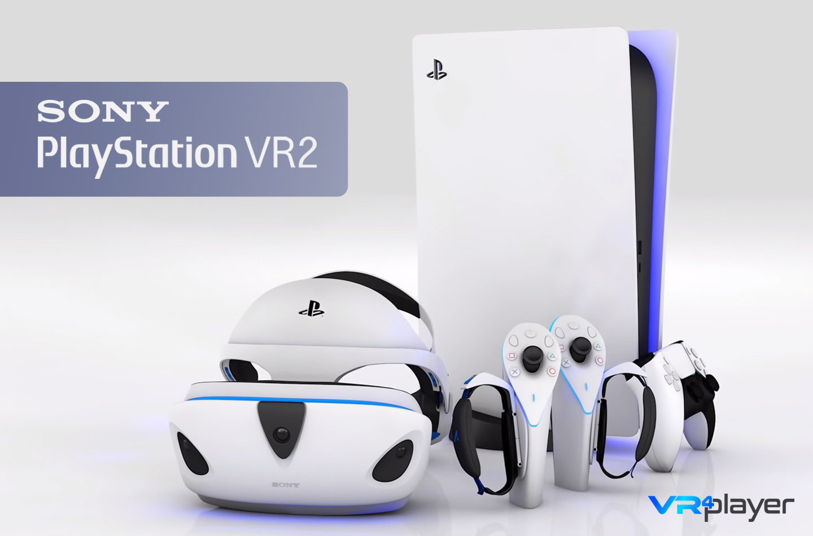
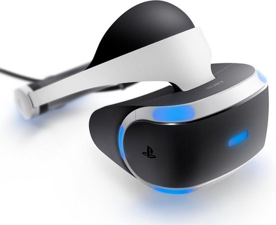
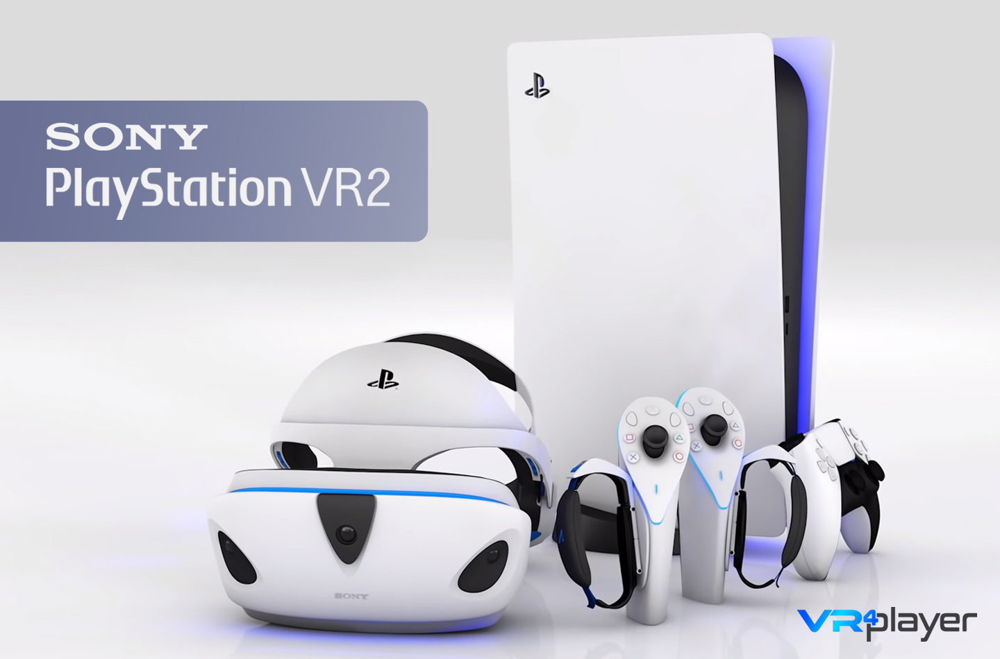
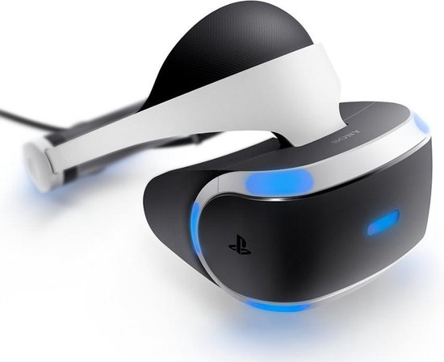

PlayStation VR 2 isn’t here quite yet, but at the very start of 2022 Sony revealed the first
detailed specs for the headset. Comparing PSVR vs. PSVR 2 specs side-by-side shows us
how much has changed since Sony’s first consumer headset released in 2016.
Among the major players in the VR space, Sony has bided its time on a follow-up to the
original headset. Assuming the company’s next-gen VR headset is released this year,
around the same time of year as the original, it will be six years between PSVR and PSVR 2.
The original PSVR was released about six months after the first major consumer VR
headsets—HTC Vive and Oculus Rift—hit the market back in 2016. However, HTC, Oculus,
and others have released many new headsets in the interim. To its credit, PSVR managed
to feel competitive for many years after its release, but eventually began to feel dated as
the rest of the pack charged ahead.
Now here we are in 2022 with PSVR 2 on PS5 set to bring new life to Sony’s VR ambitions.
Let’s take a look at how PSVR and PSVR 2 specs compare:

| PSVR 2 | PSVR | |
|---|---|---|
| Resolution | 2,000 × 2,040 per-eye, OLED, HDR | 960 × 1,080 per-eye, RGB OLED |
| Refresh Rate | 90Hz, 120Hz | 90Hz, 120Hz |
| Lenses | unknown | Single element non-Fresnel |
| Field-of-view | 110° | 100° |
| On-board cameras | 4x IR (ext) , 2x IR (int) | none |
| Input | PSVR 2 Sense controllers, eye-tracking | DualShock 4 |
| Release Date | Expected Q3/Q4 2022 | 2016 |
© 2022 Pierson Corporation. All rights reserved. All trademarks are property of their respective owners in the US and other countries.
VAT included in all prices where applicable.
Privacy Policy | Legal | School Agreement | FAQ | Cookies